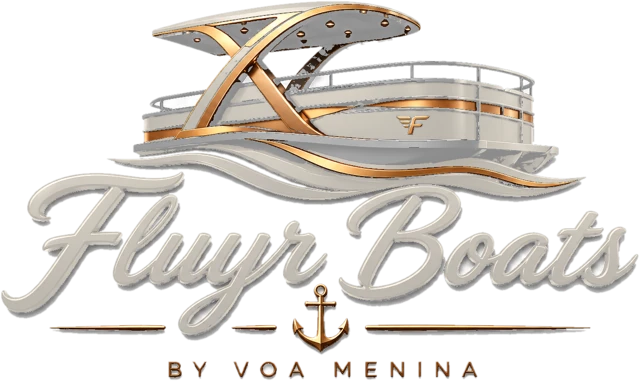

Kit de lançamento · @fluyrboats
As artes estão em instagram/posts/ (PNG 1080×1350, formato retrato do feed). Publique na ordem abaixo: foto e tipografia se alternam e, depois do 9º post, o perfil forma um xadrez como o da prévia. Clique em uma arte para abrir em tamanho real.
O post mais recente aparece no canto superior esquerdo.
As datas são sugestão: 3 posts por semana (terça, quinta e sábado), por volta das 18h — horário em que o pessoal planeja o fim de semana na água. Ajuste conforme as métricas do perfil depois das primeiras semanas.
Os vídeos originais estão em fotos-originais/. Monte no CapCut ou no próprio Instagram, com áudio em alta e textos curtos na tela. Reels alcançam quem ainda não segue o perfil — vale intercalar um por semana entre os posts.